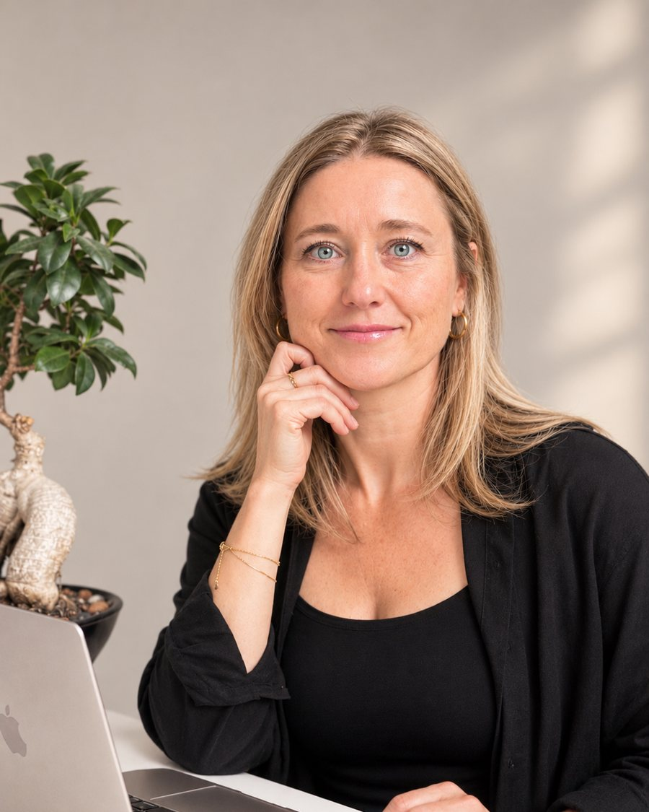
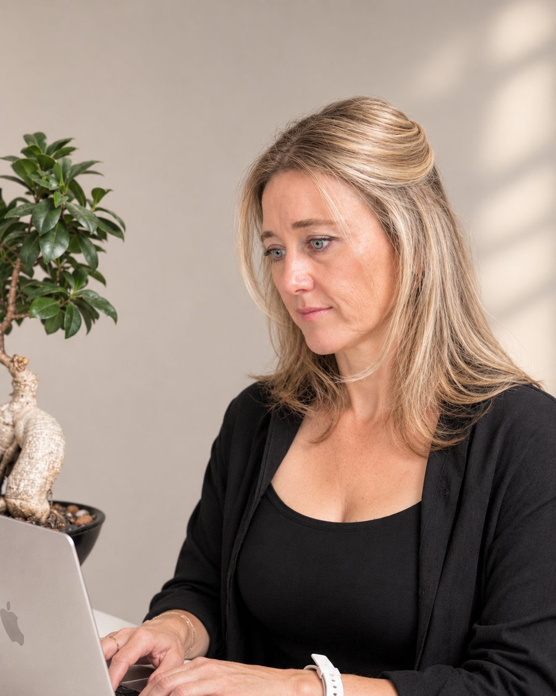

Ina Langer
Gesundheit verstehen – aus langjähriger Praxiserfahrung
Ich bin ausgebildete Heilpraktikerin und Gründerin der INA Academy. Heute gebe ich mein Wissen vor allem in Online-Kursen weiter. Persönliche Beratung biete ich auf Anfrage weiterhin an.


Über mich
Hallo, ich bin Ina.
Mich hat schon immer fasziniert, wie unser Körper funktioniert – und warum er manchmal aus dem Gleichgewicht gerät. Den Zusammenhängen hinter Beschwerden auf die Spur zu kommen, ist bis heute meine Leidenschaft.
Ich bin ausgebildete Heilpraktikerin und bilde mich seit 2013 laufend fort, mit Schwerpunkt auf Labordiagnostik und Mikronährstoffmedizin. Mehrere Jahre hatte ich eine eigene Praxis in Nürnberg und war Dozentin in der Heilpraktiker-Ausbildung. Heute vertiefe ich mein Wissen zusätzlich in der Psychologie, weil mich die Verbindung zwischen mentalen und körperlichen Prozessen immer mehr beschäftigt.
So arbeite ich
- Ich höre genau zu. Deine Geschichte gehört dazu – körperlich, emotional und im Alltag.
- Ich schaue genau hin. Laborwerte und Befunde betrachte ich im Zusammenhang, nicht als einzelne Zahlen.
- Ich erkläre verständlich. Du sollst nachvollziehen können, was in deinem Körper passiert.
- Du entscheidest. Ich zeige dir Möglichkeiten auf – welchen Weg du gehst, bestimmst du.
Ich spreche Deutsch, Russisch und Englisch und habe schon in meiner Praxiszeit viele Menschen online beraten. Mit der INA Academy gebe ich mein Wissen heute in Online-Kursen weiter – persönliche Beratung mache ich auf Anfrage weiterhin gern.
„Du kennst deinen Körper am besten. Ich helfe dir, seine Signale besser zu verstehen.“
Themen
Themen aus meiner Praxis
Mit diesen Themen habe ich in meiner Praxis besonders viel gearbeitet. Oft hängen sie miteinander zusammen – deshalb schaue ich immer auf das Ganze.
- Darmgesundheit & Verdauung
- Müdigkeit & Erschöpfung
- Schlaf
- Stress & innere Unruhe
- Hormone, Zyklus & Wechseljahre
- Haut, Haare & Nährstoffversorgung
Beratung auf Anfrage
So läuft eine Beratung ab
Die Beratung findet online per Video-Call statt – auf Deutsch, Englisch oder Russisch. Du brauchst dafür einen Laptop, ein Tablet oder ein Smartphone mit Kamera.
Terminvereinbarung
Du schreibst mir kurz, worum es dir geht. Dann vereinbaren wir einen Termin.
Erste Beratung
Im Video-Call mit Kamera schilderst du dein Anliegen. Gemeinsam gehen wir deine Beschwerden, deine Vorgeschichte und vorhandene Befunde durch.
Recherche
Wenn nötig, recherchiere ich im Anschluss gezielt zu deiner Fragestellung.
Zweite Beratung
Wir besprechen die Ergebnisse. Du bekommst eine Orientierung, welche Möglichkeiten für dich in Frage kommen.
Worum es in der Beratung gehen kann
- Ernährung und Versorgung mit Mikronährstoffen
- Einordnung vorhandener Laborwerte und Befunde
- naturheilkundliche Therapieformen, die für dich in Frage kommen können – und worauf du bei der Auswahl achten kannst
Preis
Für beide Beratungen einschließlich Recherche gilt ein Pauschalpreis. Näheres erfährst du auf Anfrage.
Die Beratung dient der Information und Orientierung. Sie ersetzt keine ärztliche Untersuchung, Diagnose oder Behandlung. Bei akuten oder ernsthaften Beschwerden wende dich bitte an deine Ärztin oder deinen Arzt.
INA Academy
Lieber selbst lernen, in deinem Tempo?
In der INA Academy gebe ich mein Wissen in Online-Kursen weiter – zu Darm, Müdigkeit, Mikronährstoffen, Hormonen und mehr. Zum Einstieg gibt es den Laborwerte-Kompass kostenlos.
Bei Interesse schreib mir
Schreib mir kurz, worum es dir geht – dann erfährst du alles Nähere zu Ablauf, Terminen und Preis.
E-Mail schreibenhallo@inaacademy.de